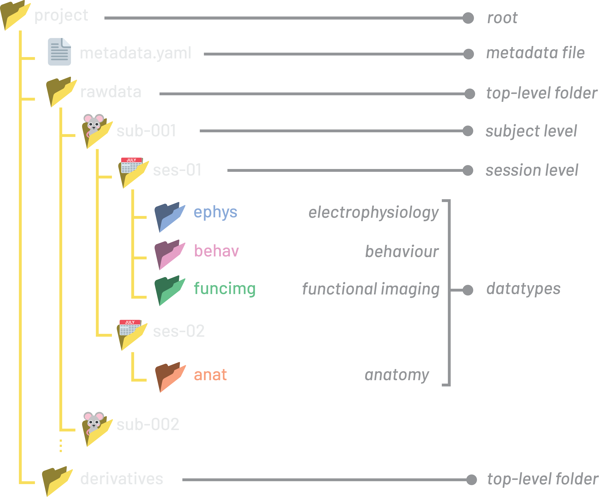
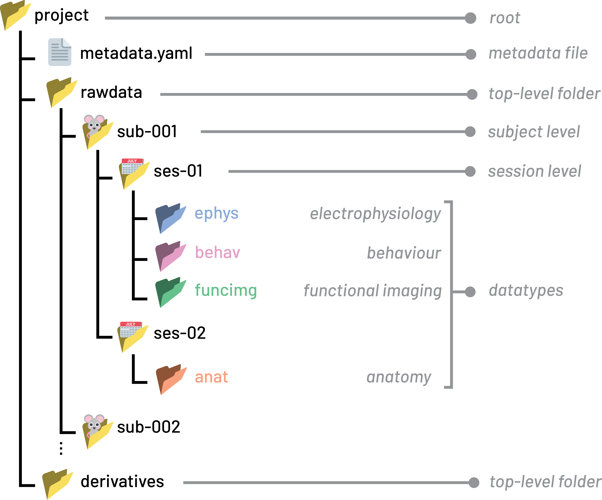

Metadata#
Scientific metadata is additional information included with a project that describes the data itself. Good metadata is one of the most valuable additions to a project: it enables full reproducibility, supports automated re-analysis, and makes your data easy to find and search across projects.
Metadata can be high-level (e.g. a general overview of the study and its purpose) or low-level (e.g. acquisition parameters an extracellular electrophysiology).
A number of detailed metadata standards exist, including those from BIDS, openMINDS and the Allen Institute for Neural Dynamics, each differing in its structure and the datatypes they cover.
A complete metadata schema can be overwhelming and difficult to implement. Here, we provide a simple schema that you can use to get started with adding metadata to your NeuroBlueprint project. You are free to add metadata fields as you wish, but at the end of this guide we recommend fields to go into metadata files.
{kind=link}

{kind=link}

An example NeuroBlueprint project with a metadata file.
YAML file format#
Metadata files should use the YAML file format (.yaml extension).
YAML is a human-readable text format designed to be easy to read and edit.
YAML stores information as key-value pairs and uses indentation (spaces) to represent structure.
For example, a simple metadata file might look like:
project:
Name: "Visual Decision Making Study"
Authors:
- "Jane Smith"
- "John Doe"
sub:
Species: "mus musculus"
Genotype: "Thy1-GCaMP6s/wt"
ephys:
SamplingFrequency: 30000
ManufacturersModelName: "Neuropixels 2.0"
Metadata organisation schema#
Metadata should be stored in metadata.yaml files that can include any of
these pre-defined sections, which map to NeuroBlueprint folder levels:
projectsubsesNeuroBlueprint datatype (e.g.
behav,ephys)
metadata.yaml files may be placed at any of the corresponding folder levels and
can contain information for that folder level and below. To include metadata on
a particular file, a sidecar metadata file can be placed next to the file.
For example, the contents of a metadata.yaml placed in the project folder root might look like:
project:
Name: "Visual Decision Making Study"
Authors:
- "Jane Smith"
- "John Doe"
sub:
Species: "mus musculus"
Strain: "C57BL/6J"
StrainRrid: "RRID:IMSR_JAX:000664"
ses:
Experimenter: "Jane Smith"
Notes: "Visual decision-making recording sessions using protocol 3A"
ephys:
SamplingFrequency: 30000
ManufacturersModelName: "Neuropixels 2.0"
PowerLineFrequency: 50
RecordingType: "continuous"
behav:
TaskName: "Visual Decision Making"
TaskDescription: "Mouse makes decisions based on visual stimuli"
The location of the metadata.yaml file indicates what data the metadata refers to.
A metadata file applies to data in all folder levels at or below it.
In the above example, the entries apply to all data in the project. Therefore, this metadata file is placed at the top-level of the project:
└── my_project/
├── metadata.yaml
└── rawdata/
├── sub-001/
│ └── ses-001/
│ ├── behav/
│ └── ephys/
├── sub-002/
│ └── ...
└── ...
To see more information on what information should be put at each section, see the metadata keys section.
Inheritance#
Sometimes, the same metadata might not apply to all data within the project.
In such cases, a metadata.yaml file can be placed at a lower level, overwriting
the metadata fields inherited from higher levels.
For example, let’s say that sub-001/ses-001 used a different sampling frequency
due to an experimental error. Instead of 30000 Hz, 27000 Hz was used.
We can put a new metadata.yaml file in the sub-001/ses-001 folder
with the ephys entry and updated sampling frequency:
└── my_project/
├── metadata.yaml
└── rawdata/
├── sub-001/
│ └── ses-001/
│ ├── metadata.yaml
│ ├── behav/
│ └── ephys/
├── sub-002/
│ └── ...
└── ...
with sub-001/ses-001/metadata.yaml containing:
ephys:
SamplingFrequency: 27000
Now, SamplingFrequency at 30000 Hz applies to all sessions except for
sub-001/ses-001, which is 27000 Hz:
This was inspired by the similar inheritance principle in BIDS
Tip
When it is equivalent to put the metadata.yaml file at one of multiple folder levels,
we recommend placing the file at the highest possible level.
In the above example, the ephys information for sub-001/ses-001/metadata.yaml is placed in the
session folder, rather than the equally valid ephys folder sub-001/ses-001/ephys/metadata.yaml.
Sidecar metadata files#
It may be required to associate metadata with a specific data file or folder.
In this case, a metadata YAML file that copies the original
file or folder name with the suffix _metadata can be used. These are called ‘sidecar’ metadata files.
Sidecar metadata files should contain the same sections as above (e.g. sub, behav etc.).
For example, in the behav folder there may be multiple
acquisition runs, with different associated metadata. In this case, a metadata
YAML file that applies specifically to a particular file can be created.
In the project below all videos are assumed to be of the task
"Visual Decision Making". However, imagine for the run run-002_camera-top.mp4
a video was taken of a different task.
In this case, we can use inheritance to overwrite the TaskName for this particular run
by placing a sidecar metadata file next to the video file of interest:
└── my_project/
├── metadata.yaml
└── rawdata/
└── sub-001/
└── ses-001/
└── behav/
├── run-001_camera-top.mp4
├── run-002_camera-top.mp4
└── run-002_camera-top_metadata.yaml
/my_project/metadata.yaml
behav:
TaskName: "Visual Decision Making"
run-002_camera-top_metadata.yaml
behav:
TaskName: "Visual Decision Making Modified Long"
Warning
All metadata files must be called metadata.yaml or be
the exact name of an existing file or folder with a _metadata suffix.
For example, my_recording_metadata.yaml is only valid if there is a file or folder
called my_recording (e.g. my_recording.bin).
Suggested metadata keys#
NeuroBlueprint does not mandate the use of any specific metadata key-value
pairs, other than the highest-level ‘section’ keys (project, sub, ses,
or one of the datatypes) mentioned above. In theory, the structural rules above
can be used to document the project as you wish.
However, we recommend using the suggested metadata keys detailed below if they cover the concept you want to document. This helps ensure that metadata entries are interoperable with your immediate colleagues, and across labs. There is no requirement to use all keys, selecting a subset that work best for your requirements is encouraged.
For example, if you want to include the species of mice in your project, it
makes sense to use the suggested key Species rather than come up with your own key.
If you find that your use case is not covered by a suggested key, please get in touch by raising a GitHub issue or through our Zulip Chat and we will be happy to add a new key to this page.
project metadata#
This section contains high-level information about the project, for example the people involved and the project’s overall purpose.
Including high-level information on the project, such as the
Keywords and Abstract entries, is very valuable, allowing simple indexing and searching
of projects for key information. For example, when starting a new project you could search
all experiments ever run by your lab for keywords relevant to your work.
For detailed descriptions of the suggested keys, see the BIDS Dataset Description Specification.
Suggested keys with example entries:
project:
Name: "Cortical Dynamics of Visual Decision Making in Mice"
Authors:
- "Jane Smith"
- "John Doe"
Keywords:
- "mouse"
- "mus musculus"
- "visual cortex"
- "decision making"
- "Neuropixels"
- "extracellular electrophysiology"
- "two-photon imaging"
Abstract: >
Head-fixed mice performed a two-alternative forced-choice visual
discrimination task while neural activity was recorded from visual
and parietal cortex using Neuropixels 2.0 probes. The dataset
accompanies a study of how choice-related signals emerge across
cortical areas during perceptual decision making.
NeuroBlueprintVersion: "0.5.0"
License: "CC-BY-4.0"
Acknowledgements: >
We thank the institute's animal facility staff for husbandry support.
HowToAcknowledge: >
Please cite Smith et al. (2026), Journal of Neuroscience,
https://doi.org/10.1234/jneurosci.2026.0001
Funding:
- "Wellcome Trust Grant 219627/Z/19/Z"
EthicsApprovals:
- "UK Home Office Project Licence PP1234567"
- "Institutional AWERB approval 2025-014"
ReferencesAndLinks:
- "https://doi.org/10.1234/jneurosci.2026.0001"
- "Smith J., Doe J. (2026). Cortical dynamics of visual decision making in mice. Journal of Neuroscience."
DatasetDOI: "https://doi.org/10.18112/openneuro.ds000123.v1.0.0"
HEDVersion: "8.4.0"
DatasetType: "raw"
SourceDatasets:
- URL: "https://gin.g-node.org/janesmith/visual-decision-raw"
Version: "1.0.0"
DatasetLinks:
stimuli: "https://gin.g-node.org/janesmith/visual-decision-stimuli"
deriv: "derivatives/spike-sorting"
sub metadata#
This metadata file contains information about experimental subjects, for example the date of birth, identifiers, strain or genotype.
Suggested keys are based on the BIDS Participants Specification. Note they are presented as snake_case in the specification, but we recommend PascalCase for consistency with other metadata files.
Suggested keys with example entries:
sub:
SubjectId: "sub-001"
Age: 12
AgeUnits: "week"
Sex: "M"
Handedness: "n/a"
Species: "mus musculus"
Strain: "C57BL/6J"
StrainRrid: "RRID:IMSR_JAX:000664"
Genotype: "Thy1-GCaMP6s/wt"
DateOfBirth: "2025-09-14"
Valid entries for AgeUnits are "year", "week", "day" or "hour".
ses metadata#
This file contains information related to the particular experimental session. For example, the date, additional notes on what happened in the session.
Suggested keys are based on the BIDS Sessions Specification. Note they are presented as snake_case in the specification, but we recommend PascalCase for consistency with other metadata files.
Suggested keys:
ses:
SessionId: "ses-001"
SessionDate: "2025-12-07"
Age: 12
AgeUnits: "week"
Weight: 26.4
WeightUnits: "g"
Notes: "First Neuropixels recording. Mouse calm, good task engagement (~450 trials)."
Experimenter: "Jane Smith"
HED: "(Delay/# ms, Agent-action, (Experiment-participant, (Press, Mouse-button))),"
Valid entries for AgeUnits are "year", "week", "day" or "hour".
Datatype keys#
Datatype metadata files contain acquisition-specific metadata for each modality.
NeuroBlueprint contains many possible datatypes
e.g. ephys, behav, funcimg, anat.
Where possible, we recommend using the BIDS keys from relevant Bids Extension Proposals (BEPs).
These are detailed below for ephys, behav and anat.
ephys#
See the BEP032 Electrophysiology Metadata Specification for detailed descriptions of the suggested keys.
Suggested keys with example entries:
ephys:
# --- Institution Information ---
InstitutionName: "University College London"
InstitutionAddress: "Gower Street, London, WC1E 6BT, United Kingdom"
InstitutionalDepartmentName: "Sainsbury Wellcome Centre"
# --- Setup Information ---
PowerLineFrequency: 50
Manufacturer: "imec"
ManufacturersModelName: "Neuropixels 2.0"
ManufacturersModelVersion: "2.0 (4-shank)"
RecordingSetupName: "Acute rig 3 — head-fixed Neuropixels"
SamplingFrequency: 30000
DeviceSerialNumber: "21010012345"
SoftwareName: "SpikeGLX"
SoftwareVersions: "20240129-phase30"
RecordingDuration: 2730.5
RecordingType: "continuous"
# --- Processing Information ---
SoftwareFilters: "n/a"
HardwareFilters: "n/a"
# --- Pharmaceuticals ---
PharmaceuticalName: "Muscimol"
PharmaceuticalDoseAmount: 0.1
PharmaceuticalDoseUnits: "µg"
PharmaceuticalDoseRegimen: >-
100 nL of 1 µg/µL muscimol in sterile saline, pressure-injected
unilaterally into right PPC via glass pipette at 20 nL/min;
30 min equilibration before recording onset.
PharmaceuticalDoseTime: -1800
# --- Sample ---
BodyPart: "BRAIN"
BodyPartDetails: "Primary visual cortex (V1) and posterior parietal cortex (PPC)"
BodyPartDetailsOntology: "http://purl.obolibrary.org/obo/UBERON_0002436"
SampleEnvironment: "in vivo"
# these would be omitted for extracellular electrophysiology, included for intracellular
SampleEmbedding: "agarose"
SliceThickness: 300
SampleExtractionProtocol: >-
Acute coronal brain slices were prepared in ice-cold oxygenated
artificial cerebrospinal fluid and maintained in oxygenated artificial
cerebrospinal fluid before recording.
# --- Supplementary ---
SupplementarySignals: "Photodiode (stimulus onset), running-wheel velocity, lick sensor, wheel position"
# --- Task Information ---
TaskName: "Visual Decision Making"
TaskDescription: "Head-fixed two-alternative forced-choice contrast discrimination."
behav#
See the BIDS Behavioural Experiments Specification for detailed descriptions of the suggested keys.
Suggested keys with example entries:
behav:
# --- Institution Information ---
InstitutionName: "University College London"
InstitutionAddress: "Gower Street, London, WC1E 6BT, United Kingdom"
InstitutionalDepartmentName: "Sainsbury Wellcome Centre"
# --- Task Information ---
TaskName: "Visual Decision Making"
TaskDescription: >-
Head-fixed two-alternative forced-choice contrast discrimination;
the mouse reports the higher-contrast side by turning a steering
wheel, and correct choices are rewarded with water.
Instructions: "n/a"
CogAtlasID: "n/a"
CogPOID: "n/a"
anat#
We use the BIDS microscopy metadata fields as a starting point.
See the full specification for detailed descriptions of the suggested keys, BIDS Microscopy Specification.
Suggested keys with example entries:
anat:
# --- Image Acquisition ---
PixelSize: [0.5, 0.5, 2.0]
PixelSizeUnits: "um"
Immersion: "Air"
NumericalAperture: 0.45
Magnification: 10
ImageAcquisitionProtocol: "https://doi.org/10.17504/protocols.io.xxxxxxx"
OtherAcquisitionParameters: >-
Tile scan with 10% overlap, stitched in ZEN; 3 channels
(DAPI 405 nm, GFP 488 nm, DiI 561 nm); z-step 2 µm.
# --- Sample ---
BodyPart: "BRAIN"
BodyPartDetails: "Coronal section (~-2.0 mm from bregma) containing V1 and PPC"
BodyPartDetailsOntology: "http://purl.obolibrary.org/obo/UBERON_0002436"
SampleEnvironment: "ex vivo"
SampleEmbedding: "Agarose (4%) for vibratome sectioning"
SampleFixation: "4% paraformaldehyde in 0.1 M PBS, transcardial perfusion, 24 h post-fix at 4 °C"
SampleStaining: "DAPI nuclear counterstain; immunostaining for GFP"
SamplePrimaryAntibody: "Chicken polyclonal anti-GFP (RRID:AB_300798)"
SampleSecondaryAntibody: "Goat anti-chicken IgY Alexa Fluor 488 (RRID:AB_2534096)"
SliceThickness: 50
TissueDeformationScaling: 100
SampleExtractionProtocol: "https://doi.org/10.17504/protocols.io.yyyyyyy"
SampleExtractionInstitution: "Sainsbury Wellcome Centre, University College London"
# --- Chunk Transformations --- (usually omitted unless chunk-<index> is used)
ChunkTransformationMatrix:
- [1, 0, 0, 0]
- [0, 1, 0, 0]
- [0, 0, 1, 0]
- [0, 0, 0, 1]
ChunkTransformationMatrixAxis: "XYZ"
# --- Hardware Information ---
Manufacturer: "Zeiss"
ManufacturersModelName: "LSM 980"
DeviceSerialNumber: "3825001234"
StationName: "Confocal rig 2"
SoftwareVersions: "ZEN 3.4 (blue edition)"
# --- Institution Information ---
InstitutionName: "University College London"
InstitutionAddress: "Gower Street, London, WC1E 6BT, United Kingdom"
InstitutionalDepartmentName: "Sainsbury Wellcome Centre"